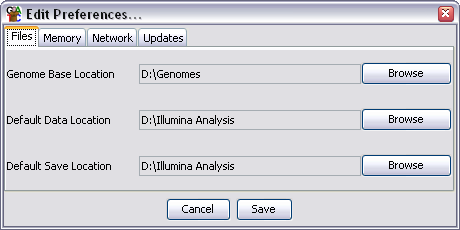

Under Edit > Preferences there are a set of editable preferences which you can alter to either improve the running of SeqMonk or to make it more suited to the way you work. In most cases SeqMonk will probably work just fine with the default values, but it may still be worth spending a couple of minutes going through the preferences to see if there are things which could work better for you.
If you are unsure about changing a preference then it's probably best to leave it alone.
All of your preferences are stored in a file called seqmonk_prefs.txt. This will be present in your 'home' directory. On unix based filesystems this will be the top level of your personal workspace. On windows it will normally be under Documents and Settings/[your username]. If you want to completely reset your preferences you can simply delete this file and a default file will be created the next time SeqMonk is run.

There are 4 groups of preference settings which can be accessed via the tabs at the top of the window.
There are three file locations which can be set. To change these just press the browse button on the right of each field and select the directory you want.
The file locations you can specify are:
Although you can set default locations here SeqMonk will also remember the last folder you used in the current session and use that again once you have changed from the default in a given session. The preferred directory will be remembered for the next time you open the program.
Large datasets come with huge amounts of mapped position data, which although it is referred to by SeqMonk can consume large amounts of memory whilst being idle for most of the time. You can choose to save this data to cache files on disk to free up active memory. The cost for this is that every time you want to refer back to the data there will be a delay whilst the data is retrieved from disk. This will happen when you switch the genome view between chromosomes, or when you perform an operation such as quantitation which needs to read through all of the data.
If you want to turn on data caching then you need to tick the box which says "Cache read data to disk". You also need to tell SeqMonk which directory you want it to use to save this data.
Changes to the caching options will not have any effect until SeqMonk is restarted.
By default SeqMonk saves its data in a text based format which is quick to read, but is not designed to be a very compact format. If you choose to turn on file compression then all of your seqmonk output files will be gzip compressed as they are written. This will reduce the filesize of your output by a factor of about 3, but will increase the time to save data by a factor of about 2. Loading of compressed files is only marginally slower than uncompressed files.
Another large sources of memory usage in SeqMonk are the genome annotations. Along with the read data these annotations will also be cached to disk if you choose to use disk caching.
You can also choose to exclude certain annotation types when loading your genome. Some annotation types may be of no interest to you and you can prevent them from loading all together by adding them to the exclusion list. If you leave this list blank then all possible feature types will be loaded.
You can add and remove featues from the list by using the Add and Remove buttons. If you currently have a genome loaded then when you press Add you will see a list of loaded feature types which you can choose to exclude for the next time you load a genome. You can also ignore these and put in any feature name you like.
You can change these settings in the memory preferences, but the changes will only take effect when the program is restarted.
Depending on the setup of your network you may not be able to access the internet directly, but must instead route your connection via a proxy server. Since SeqMonk requires access to the network to be able to download genome annotation files it needs to know if your network requires a proxy.
If your network uses a proxy you need to fill in the HTTP proxy server and HTTP proxy port boxes. The name of the server should be provided without an http:// prefix (ie wwwcache.example.com rather than http://wwwcache.example.com). If you don't use a proxy then the server box should be empty (it doesn't matter what is in the port box in this case).
The final option is to specify a location for the SeqMonk data server. Although it is possible for sites to run their own data servers this is not likely to be common and you should leave this alone unless you are absolutely sure that you need to change it.
SeqMonk is under continual development and regular new releases will add new features and fix bugs which have been reported. It is a good idea to keep SeqMonk updated to the latest version to ensure you are benefitting from these development efforts.
By default every time SeqMonk is started it will check back with its download server to see if a newer version of the program is available. If a newer version has been released you will be informed of this - no change will be made to your existing program. To install the newer version you simply go back to the project website at www.bioinformatics.bbsrc.ac.uk/projects/seqmonk/ and download the update.
If you do not want SeqMonk to check for updates then simply untick the "Check for program updates on startup" box in the updates preferences.